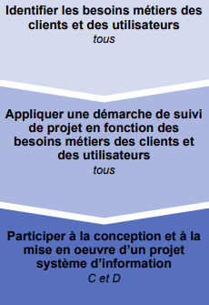

Compétence 5 : Conduire un projet

Apprentissages Critiques
Conduire un projet
- AC 1: Identifier les besoins d'un projet.
- AC 2: Définir des objectifs et des livrables.
- AC 3: Organiser le travail dans le temps.
- AC 4: Suivre l'avancement d'un projet.
Piloter un projet informatique
- AC 1: Planifier les tâches.
- AC 2: Répartir les rôles et responsabilités.
- AC 3: Ajuster l'organisation selon les contraintes.
- AC 4: Rendre compte de l'état d'avancement.
Travailler en méthode projet
- AC 1: Utiliser des outils de suivi.
- AC 2: Collaborer efficacement dans une équipe.
- AC 3: Anticiper les risques et les difficultés.
- AC 4: Présenter les résultats obtenus.
Évaluation des ressources
| Ressources | R1.02: Dev. interfaces web | R1.08: Intro Gestion orga. | R1.09: Intro. économie | R1.10: Anglais | R1.11: Bases de la comm. | R1.12: PPP |
|---|---|---|---|---|---|---|
| 60% | 11% | 11% | 11% | 11% | 11% | 11% |
S.A.É S1.06 : Découverte de l'environnement économique et écologique
La problématique professionnelle est de savoir faire une synthèse d'un sujet lié au numérique dans le cadre du lancement d'une nouvelle activité ou d'un nouveau produit.
Ce sujet doit concerner la place de l'organisation dans l'environnement économique ou écologique.
Cette SAÉ permet d'aborder la création et la présentation d'un document numérique tout en découvrant l'environnement professionnel.
En se plaçant dans un contexte prédéterminé, il faut effectuer une présentation numérique du positionnement économique ou écologique de l'entreprise ou d'un ensemble d'entreprises, en utilisant des informations et outils pertinents.
R1.02
Développement d'interfaces web
Apprentissages Critiques: Appréhender l'écosystème numérique.
L'objectif de cette ressource est d'apprendre les techniques de création de documents numériques sur le web en réponse à des besoins client.
Cette ressource est une base pour réaliser un développement d'application tout en appréhendant les besoins du client et de l'utilisateur.
Savoirs de référence étudiés :
- Spécifications d'interfaces utilisateur, maquettage (sketch, scénarios, persona…).
- Technologies d'affichage du Web (HTML, CSS…).
- Test de la conformité des sites Web aux standards d'accessibilité W3C / WAI.
Prolongements suggérés : Génération de documents numériques.
R1.08
Introduction à la gestion des organisations
Apprentissages Critiques: Appréhender l'écosystème numérique.
L'objectif de cette ressource est de découvrir l'organisation et la transformation numérique.
D'une part, la découverte de l'organisation permet une compréhension des enjeux et des besoins sous-jacents des projets.
Les défis organisationnels du XXIe siècle amènent également à se questionner sur les évolutions informatiques et managériales.
Savoirs de référence étudiés :
- Fondements des organisations.
- Caractéristiques stratégiques et structurelles des organisations.
- Enjeux de la transformation numérique des organisations.
- Les différents savoirs de référence pourront être approfondis.
R1.09
Introduction à l'économie durable et numérique
Apprentissages Critiques: Appréhender l'écosystème numérique.
L'objectif de cette ressource est de découvrir l'économie durable et responsable.
L'essor des données de l'information dans la société actuelle amène des nouveaux défis économiques.
Savoirs de référence étudiés :
- Fondements de l'économie.
- Écoconception des services numériques.
- Enjeux économiques des données de l'information.
- Les différents savoirs de référence pourront être approfondis.
R1.10
Anglais
Apprentissages Critiques: Acquérir les compétences interpersonnelles pour travailler en équipe.
L'objectif de cette ressource est d'introduire l'anglais de spécialité informatique et de développer sa culture générale et scientifique.
Cette ressource permet l'acquisition du vocabulaire de base de l'informatique.
Savoirs de référence étudiés :
- Vocabulaire de base de l'informatique et de la bureautique.
- Initiation aux techniques de présentation orale.
- Compréhension des ressources à l'écrit et à l'oral.
- Les différents savoirs de référence pourront être approfondis.
R1.11
Bases de la communication
Apprentissages Critiques: Appréhender l'écosystème numérique | Acquérir les compétences interpersonnelles pour travailler en équipe.
L'objectif de cette ressource est d'aborder les fondamentaux de la communication.
Cette ressource permet une approche sur l'importance de bien communiquer face à un client.
Savoirs de référence étudiés :
- Communication verbale et non verbale.
- Recherche documentaire, appropriation, réutilisation de l'information, prise de notes, analyse critique des sources.
- Développement d'une attitude critique.
- Recueil des besoins.
- Conception de documents de communication.
- Les différents savoirs de référence pourront être approfondis.
R1.12
Projet professionnel et personnel
Apprentissages Critiques: Tous les AC.
L'objectif de cette ressource est d'identifier le savoir-être et le savoir-faire.
Cette ressource permet de se familiariser avec les éléments constitutifs du B.U.T. informatique, de mieux cerner sa connaissance de soi et d'apprendre à définir ses compétences au travers de ses expériences.
Savoirs de référence étudiés :
- Appropriation de la démarche PPP.
- Appropriation de la formation.
- Découverte des métiers et connaissance du territoire.
- Projection dans un environnement professionnel.